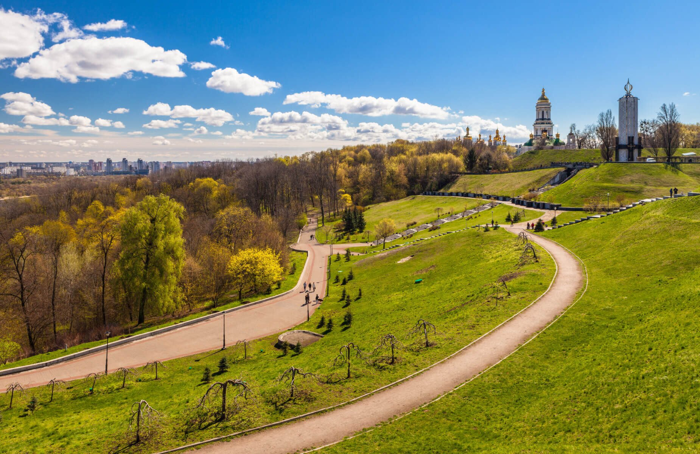

назад
Парк Вечной Славы

История и современность
В период Киевской Руси верхняя часть парка принадлежала великокняжескому селу Берестову, в XVI—XVII веках — к печерскому городку, сложившемуся около Лавры. После сооружения в начале XVIII века земляной крепости (цитадели) была занята её гласисом и эспланадой.В конце XIX века на верхней террасе был ограждён забором пустырь, входивший в большую Эспланадную площадь (занимала нечётную сторону нынешней улицы Омельяновича-Павленко). В 1894 году по инициативе и при непосредственном участии коменданта Киевской крепости генерал-лейтенанта артиллерии А. В. Аносова начались работы по упорядочению и благоустройству этого участка. Были высажены деревья и кустарники разных пород, проложены пешеходные дорожки, построены деревянные мостки и павильоны, установлены скамейки для отдыха, на краю обрыва построена веранда с буфетом, перед ней устроен небольшой фонтан с деревянным бассейном (первоначальная планировка не сохранилась). Средства на создание и содержание сада выделил город, деньги были собраны также среди военнослужащих киевского гарнизона и состоятельных киевлян (в частности, купец Л. Бродский пожертвовал 500 рублей, А. Аносов за свой счёт оборудовал в саду спортивную площадку, где были шесты, канаты, мачты, лестницы, брёвна, трапеции, кольца, горки для катания, трамплин, качели, гигантские шаги, кегли и тому подобное оборудование). Сад, известный среди киевлян как сад имени А. Аносова, или Аносовский сад (официально — крепостной Комендантский детский сад), стал чрезвычайно популярным. После отъезда в 1899 году генерала Аносова в Санкт-Петербург сад постепенно пришёл в упадок. В начале XX века его немного упорядочили, так как он был избран скаутами местом проведения их ежегодного традиционного праздника — дня памяти святого Георгия (23 апреля). В 1916 году военное ведомство обязало все части местного гарнизона, имевшие оркестры, поочерёдно устраивать в саду в тёплое время года ежедневные музыкальные трёхчасовые концерты.В мае 1919 года Киевский губисполком решил отвести под кладбище «жертв контрреволюции» место на склонах Аносовского сада. 29 декабря 1919 года здесь в братской могиле похоронены 42 погибших, среди которых — писатели И. Михайличенко и В. Чумак. Захоронения разрушены в 1933 году в результате оползня.В 1951 году территорию парка увеличили до 7,3 га. В 1956 году принято постановление Совета Министров СССР и ЦК КПУ о сооружении на этом месте парка Вечной Славы воинам Великой Отечественной войны 1941—1945 годов, согласно которому была увеличена территория, осуществлена реконструкция и благоустройство. В 1957 году торжественно открыт Мемориал Вечной Славы (архитекторы А. Милецкий, В. Бакланов, Л. Новиков, скульптор И. Першудчев), к которому на Аллею героев перенесено 35 воинских захоронений с Байкового и Лукьяновского кладбищ, Аскольдовой могилы, с некоторых парков и площадей города (в том числе одно — Неизвестного солдата с Лютежского плацдарма). Разные по званию военные — от старшины до генерал-полковника — воевали с врагом на территории  Украины, большинство отличилось в боях за Киев. Среди них 12 Героев Советского Союза. К 30-летию победы над нацистской Германией (1975 год) сформирована Аллея городов-героев, ведущая от Лаврской улицы к памятнику на могиле Неизвестного солдата. Стволы высаженных тогда елей окружены бордюром из полированного гранита, на котором накладными бронзовыми буквами выложены названия городов-героев и текст посвящения.В 1984 году, по случаю 40-летия освобождения Киева от нацистских захватчиков, парк реконструирован (главный архитектор проекта А. Милецкий): обновлено оформление входов, заменены ограждение, парковые скамейки, светильники, покрытие аллей и дорожек и т. д. Уровень Аллеи героев поднят на 40 см, на могилах установлены новые плиты. В 1988 году частично реставрированы обращённые в сторону парка валы и бастионы Киево-Печерской цитадели (архитекторы Д. Воронов, А. Колесников): восстановлены травяные эскарпы, на валганг Спасского бастиона проложены прямые гранитные ступени. Выполнено ландшафтное благоустройство территории с расчисткой от дикой растительности днепровских склонов и с организацией обзорных зон и площадок. К 2000 году осуществлено упорядочение присоединённой к парку средней Надднепровской террасы, где проложена прогулочная дорога от Аскольдовой могилы до стен Лавры; перед главным входом в парк со стороны площади Славы сделано новое замощение круглой аванплощади; верхняя и нижняя террасы парка соединены гранитными лестницами. Напротив Аскольдовой могилы на средства Общественного фонда святого Андрея Первозванного сооружена часовня в честь 2000-летия Рождества Христова (архитектор Н. Жариков, художник-монументалист Л. Мешкова). В 2001 году неподалёку установлена парковая скульптура, посвященная военным лётчикам.Решением от 25 января 2007 года Киевский горсовет выделил в аренду сроком на 5 лет участок парка Вечной Славы площадью 0,77 га для строительства на нём Мемориала памяти жертв голодоморов на Украине, предусмотренного распоряжением Президента Украины от 2002 года и указами Президента Украины от 2005 и 2006 годов. Строительство началось в августе 2008 года. Первая очередь Мемориала стоимостью 133 млн. 775 тыс. 429 грн. была открыта к 75-й годовщине Голодомора, 22 ноября 2008 года. Она включает в себя памятник-часовню («Свечу памяти» — колокольню в форме белой свечи, увенчанную позолоченным ажурным пламенем; в нижней части свеча опоясана крестами, напоминающими крылья ветряка, и украшена скульптурами журавлей), скульптуру девочки с колосками в руках на площади Памяти, скульптуры Ангелов при входе в Мемориал, Аллею «черных досок» и калиновую рощу. Комплекс построен по проекту народного художника Украины А. Гайдамаки, архитектор Ю. Ковалёв. 8 июля 2009 года распоряжением Кабинета Министров Украины был создан музей «Мемориал памяти жертв голодоморов на Украине», открытый для посещения в очередную годовщину Независимости Украины, 24 августа 2009 года, в подземном Зале памяти. Комплекс посещают главы иностранных государств и правительств, другие высокие гости, которые по традиции высаживают куст калины у входа в Мемориал. 18 февраля 2010 года музей получил статус Национального.9 мая 2010 года в конце левой стороны Аллеи городов-героев был открыт памятник лётчику И. Кожедубу (скульпторы Александр Шлапак, Евгений Карпов, архитектор Леонид Малый). Предполагается, что памятник И. Кожедубу станет началом Аллеи воинской славы. 22 мая 2012 года Верховная рада приняла постановление о её создании. «Аллеей будут увековечены имена героев, родившихся на Украине и принимавших участие в боевых действиях за освобождение Украины. Она должна стать произведением искусства, что способствовало бы и воспитанию, и увековечению памяти. Идея проекта — не выходить за рамки Великой Отечественной войны», — отметил председатель Оргкомитета по созданию Аллеи министр образования и науки, молодёжи и спорта Украины Д. Табачник. 1 мая 2013 года на Аллее были открыты бюсты Г. Берегового и С. Амет-Хан, 21 сентября 2013 года — С. Ковпака и А. Фёдорова, а 5 ноября 2013 года — П. Рыбалко и И. Черняховского.6 декабря 2017 года Кабинет министров Украины согласовал реконструкцию первой очереди и строительство второй очереди Мемориала памяти жертв Голодоморов сметной стоимостью около 772 млн грн. По плану реконструкция первой очереди должна занять 10 месяцев, а строительство второй очереди — 2 года. 3 апреля 2018 года члены правительства заложили капсулу на месте строительства второй очереди мемориала, после чего рабочие приступили к его возведению.
Украины, большинство отличилось в боях за Киев. Среди них 12 Героев Советского Союза. К 30-летию победы над нацистской Германией (1975 год) сформирована Аллея городов-героев, ведущая от Лаврской улицы к памятнику на могиле Неизвестного солдата. Стволы высаженных тогда елей окружены бордюром из полированного гранита, на котором накладными бронзовыми буквами выложены названия городов-героев и текст посвящения.В 1984 году, по случаю 40-летия освобождения Киева от нацистских захватчиков, парк реконструирован (главный архитектор проекта А. Милецкий): обновлено оформление входов, заменены ограждение, парковые скамейки, светильники, покрытие аллей и дорожек и т. д. Уровень Аллеи героев поднят на 40 см, на могилах установлены новые плиты. В 1988 году частично реставрированы обращённые в сторону парка валы и бастионы Киево-Печерской цитадели (архитекторы Д. Воронов, А. Колесников): восстановлены травяные эскарпы, на валганг Спасского бастиона проложены прямые гранитные ступени. Выполнено ландшафтное благоустройство территории с расчисткой от дикой растительности днепровских склонов и с организацией обзорных зон и площадок. К 2000 году осуществлено упорядочение присоединённой к парку средней Надднепровской террасы, где проложена прогулочная дорога от Аскольдовой могилы до стен Лавры; перед главным входом в парк со стороны площади Славы сделано новое замощение круглой аванплощади; верхняя и нижняя террасы парка соединены гранитными лестницами. Напротив Аскольдовой могилы на средства Общественного фонда святого Андрея Первозванного сооружена часовня в честь 2000-летия Рождества Христова (архитектор Н. Жариков, художник-монументалист Л. Мешкова). В 2001 году неподалёку установлена парковая скульптура, посвященная военным лётчикам.Решением от 25 января 2007 года Киевский горсовет выделил в аренду сроком на 5 лет участок парка Вечной Славы площадью 0,77 га для строительства на нём Мемориала памяти жертв голодоморов на Украине, предусмотренного распоряжением Президента Украины от 2002 года и указами Президента Украины от 2005 и 2006 годов. Строительство началось в августе 2008 года. Первая очередь Мемориала стоимостью 133 млн. 775 тыс. 429 грн. была открыта к 75-й годовщине Голодомора, 22 ноября 2008 года. Она включает в себя памятник-часовню («Свечу памяти» — колокольню в форме белой свечи, увенчанную позолоченным ажурным пламенем; в нижней части свеча опоясана крестами, напоминающими крылья ветряка, и украшена скульптурами журавлей), скульптуру девочки с колосками в руках на площади Памяти, скульптуры Ангелов при входе в Мемориал, Аллею «черных досок» и калиновую рощу. Комплекс построен по проекту народного художника Украины А. Гайдамаки, архитектор Ю. Ковалёв. 8 июля 2009 года распоряжением Кабинета Министров Украины был создан музей «Мемориал памяти жертв голодоморов на Украине», открытый для посещения в очередную годовщину Независимости Украины, 24 августа 2009 года, в подземном Зале памяти. Комплекс посещают главы иностранных государств и правительств, другие высокие гости, которые по традиции высаживают куст калины у входа в Мемориал. 18 февраля 2010 года музей получил статус Национального.9 мая 2010 года в конце левой стороны Аллеи городов-героев был открыт памятник лётчику И. Кожедубу (скульпторы Александр Шлапак, Евгений Карпов, архитектор Леонид Малый). Предполагается, что памятник И. Кожедубу станет началом Аллеи воинской славы. 22 мая 2012 года Верховная рада приняла постановление о её создании. «Аллеей будут увековечены имена героев, родившихся на Украине и принимавших участие в боевых действиях за освобождение Украины. Она должна стать произведением искусства, что способствовало бы и воспитанию, и увековечению памяти. Идея проекта — не выходить за рамки Великой Отечественной войны», — отметил председатель Оргкомитета по созданию Аллеи министр образования и науки, молодёжи и спорта Украины Д. Табачник. 1 мая 2013 года на Аллее были открыты бюсты Г. Берегового и С. Амет-Хан, 21 сентября 2013 года — С. Ковпака и А. Фёдорова, а 5 ноября 2013 года — П. Рыбалко и И. Черняховского.6 декабря 2017 года Кабинет министров Украины согласовал реконструкцию первой очереди и строительство второй очереди Мемориала памяти жертв Голодоморов сметной стоимостью около 772 млн грн. По плану реконструкция первой очереди должна занять 10 месяцев, а строительство второй очереди — 2 года. 3 апреля 2018 года члены правительства заложили капсулу на месте строительства второй очереди мемориала, после чего рабочие приступили к его возведению.
Описание
Парк состоит из двух контрастных по характеру и искусно соединённых между собой частей: верхнего плато с древесными и кустарниковыми насаждениями, с края которого раскрывается панорама Днепра и Левобережья, и широкого партера с травяными газонами на днепровских склонах, расчерченного извилистыми лестницами, ведущими к нижней прогулочной дороге, проложенной по горизонтали рельефа и отделённой от Днепровского спуска кулисой из деревьев. Устройство партера обеспечило раскрытие ансамбля Киево-Печерской лавры со стороны спуска. Парк на верхнем плато делится на мемориальную (северную) часть и зону прогулок и отдыха (южную). Мемориальная часть имеет лучевой характер планирования со схождением трёх аллей к главному входу на площади Славы; южная, обозначенная незначительными перепадами уровней рельефа (остатки насыпи бывшего гласиса), — крещатую композицию плана с круглой поляной и клумбой в центре. Регулярная планировочная сеть дополнена криволинейными дорожками, в частности — видовой с тремя закругленными смотровыми площадками на краю плато. Обе части засажены и благоустроены: в мемориальной — зелёные изгороди из стриженого граба и ритмично высаженные ели вдоль Аллеи городов-героев и мощение плитами серого гранита; в южной — свободное размещение деревьев и кустарников и покрытие аллей и дорожек современными фигурными элементами мощения (так называемыми ФЭМами). Низкая ограда парка составлена из гранитных блоков с бучардированной поверхностью. Вдоль аллеи, параллельной Лаврской улице, и на южной лужайке установлены полукруглые в плане скамьи для отдыха (кирпичная основа с деревянными рейками для сидения). Фонари освещения выполнены в виде невысоких вертикальных цилиндров из металла и оргстекла (в верхней части). У подножия Спасского бастиона Киево-Печерской цитадели и недалеко от Аскольдовой могилы обустроены детские площадки.Ландшафты парка отличаются живописностью. Здесь растут клён остролистный, серебристый явор, липа, берёза, вяз, тополь, ель, ива, дуб пирамидальный, другие породы деревьев; кустарники — аморфа, жасмин, сирень, спирея, тамариск, форзиция и т. д.
Парк Вечной Славы относится к лучшим нагорным паркам Киева.
назад